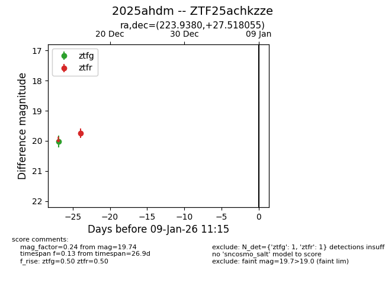
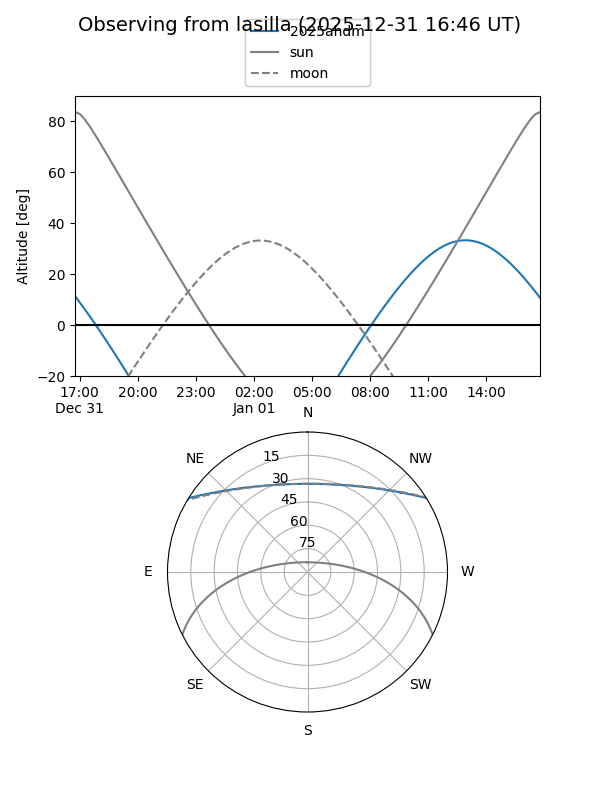
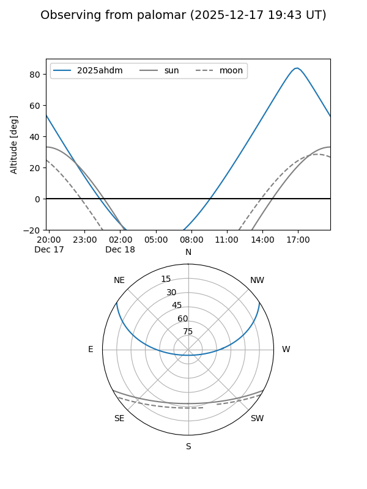

2025ahdm
Target 2025ahdm at 2025-12-31 18:00
Aliases and brokers:
FINK: link
Lasair: link
ALeRCE: link
TNS: link
YSE: link
alt names
ZTF25achkzze (ztf,fink_ztf)
2025ahdm (tns,yse)
Coordinates:
equatorial (ra, dec) = 223.9380,+27.51806
equatorial (HMS+DMS) = 14:55:45.12,+27:31:05.00
galactic (l, b) = (40.9944,+62.45913)
Flags:
Photometry:
last ztfg=20.02, ztfr=19.74
1 ztfg, 1 ztfr detections
Lightcurve

Visibility


Additional plots